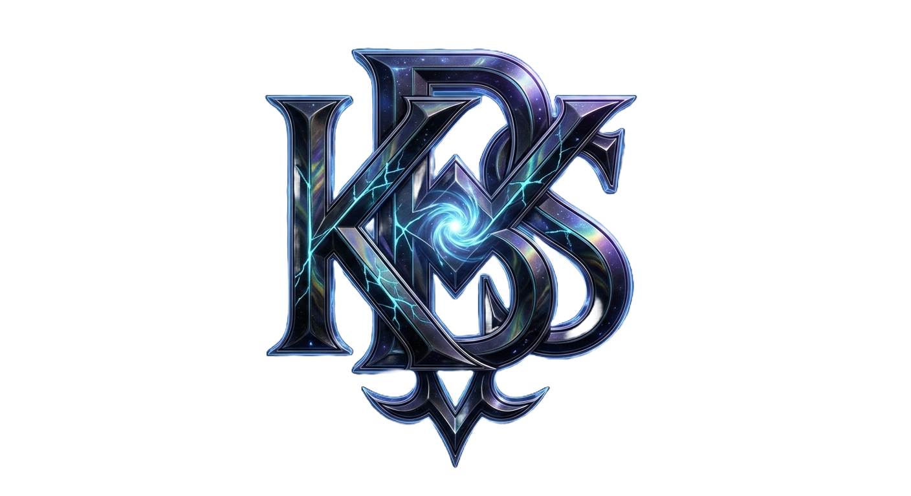
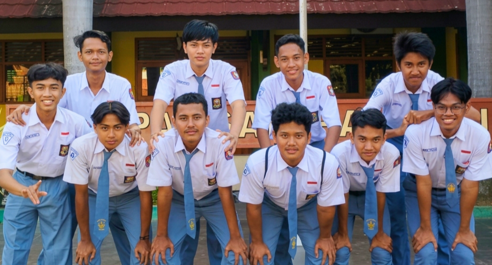
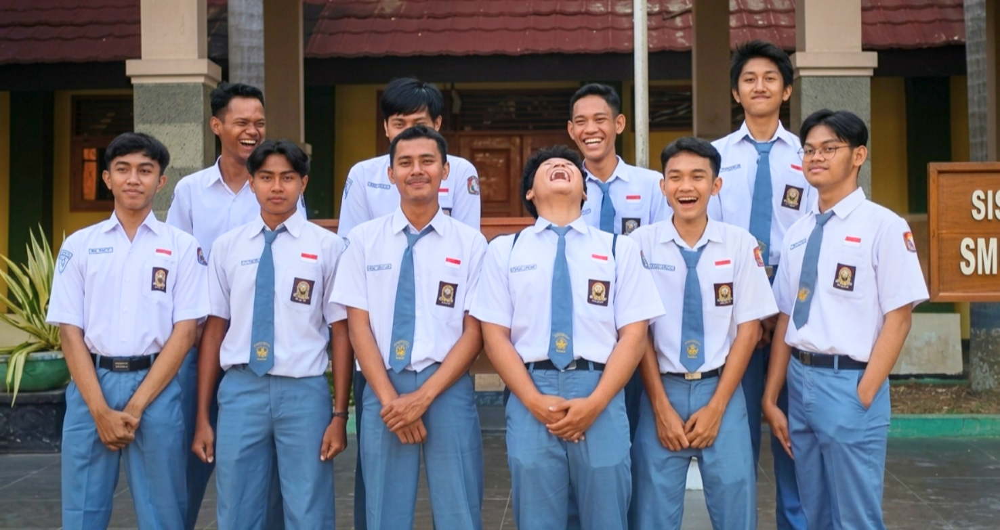
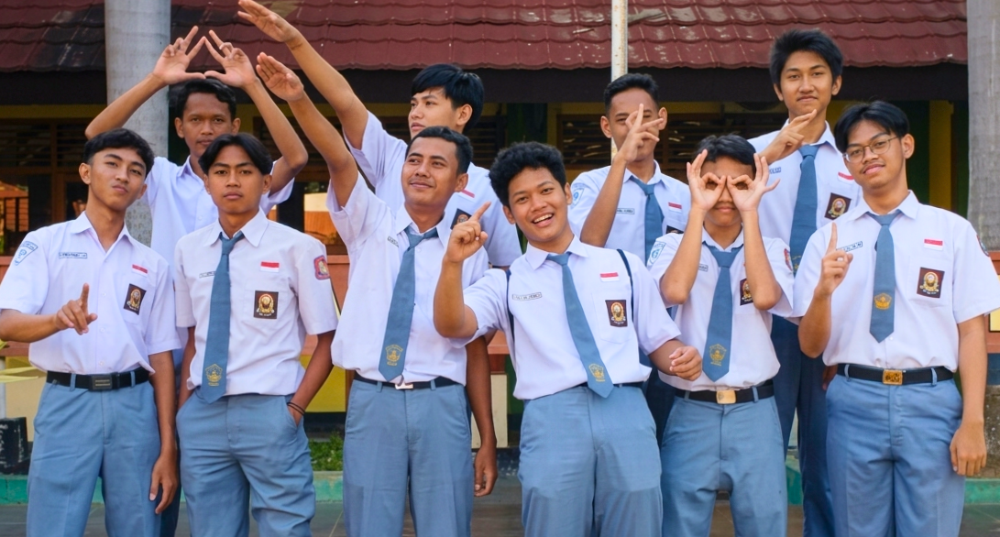
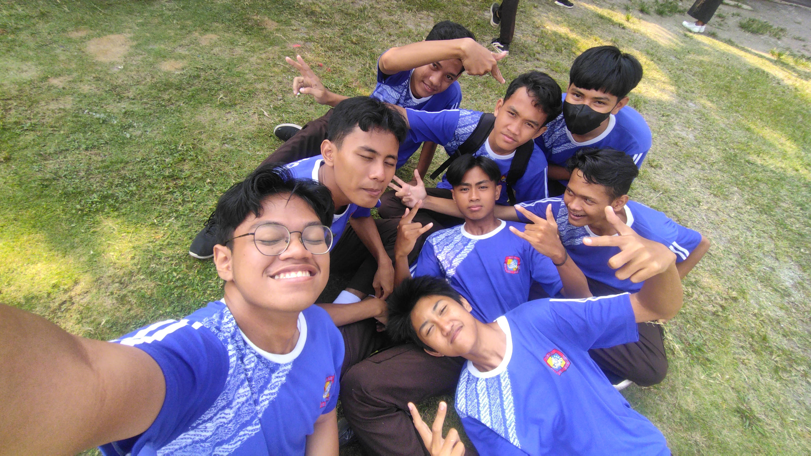
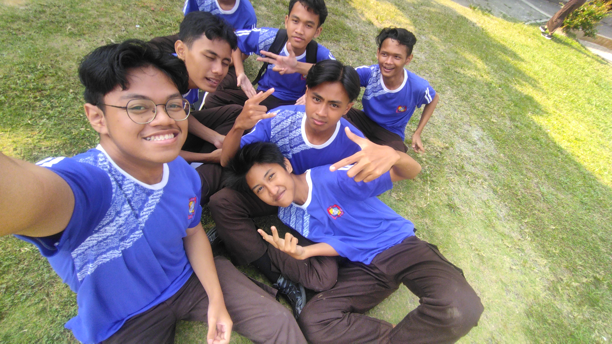
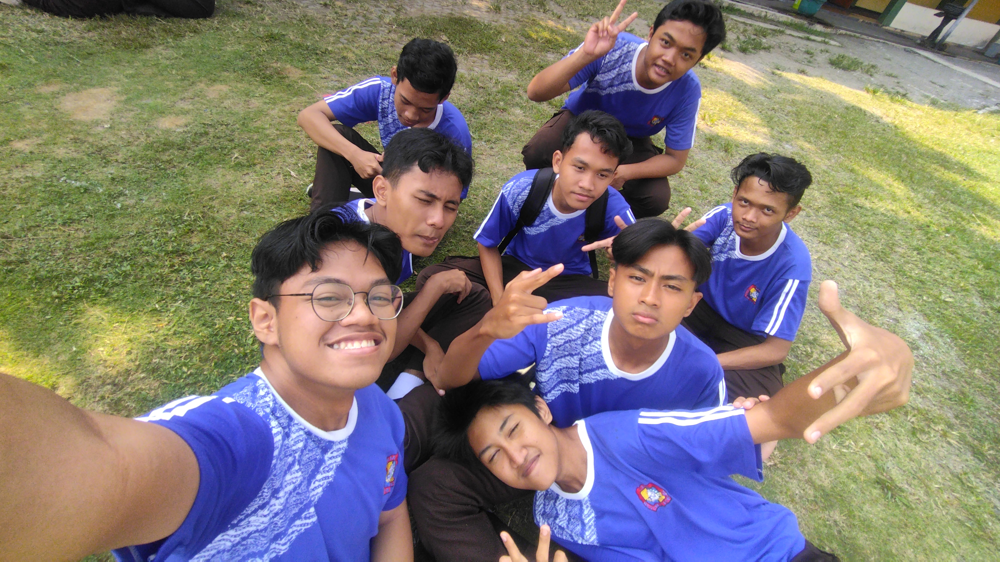
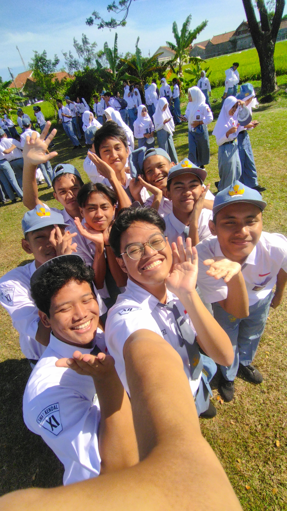
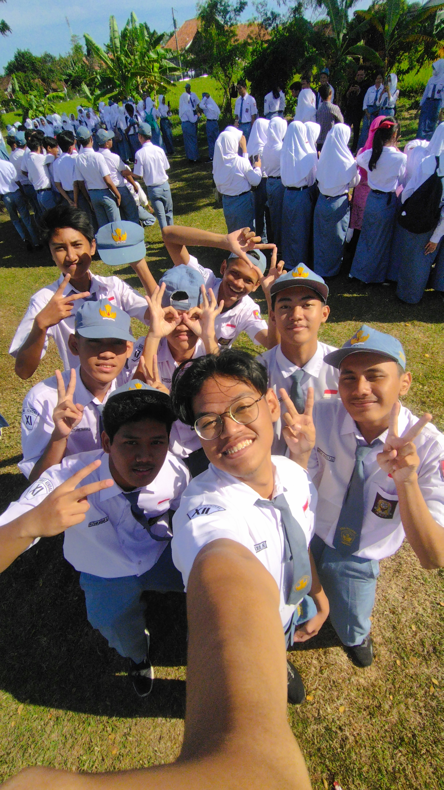
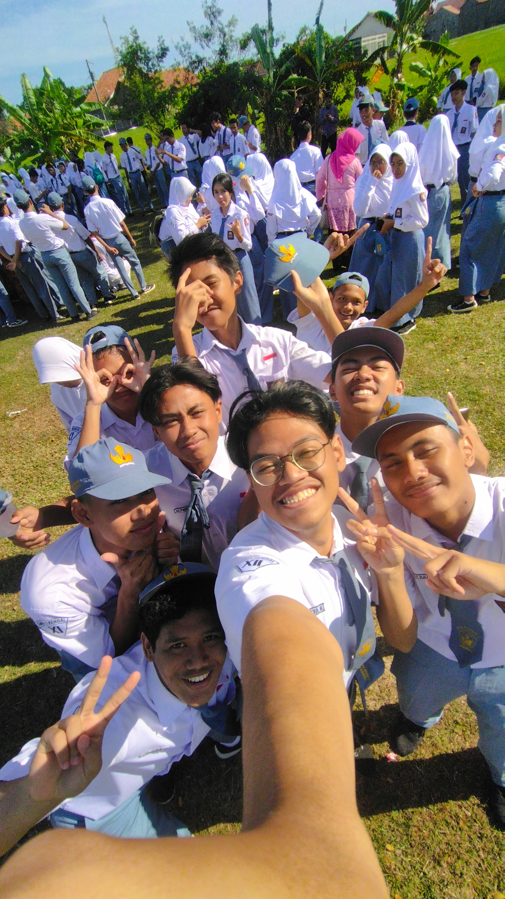

Memasuki Markas...
Est. 2023
"Berdiri sejak 2023, sesekali duduk kalau lagi capek berdiri"
Bermula dari sekumpulan siswa yang dipertemukan di bangku kelas, lalu jadi teman nongkrong, jadi tempat curhat, jadi partner ngeluh, sampai akhirnya jadi saksi hidup dari segala drama dan kebodohannya.








